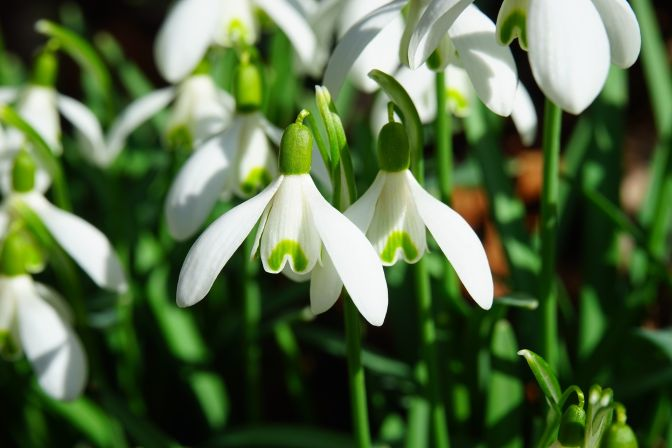
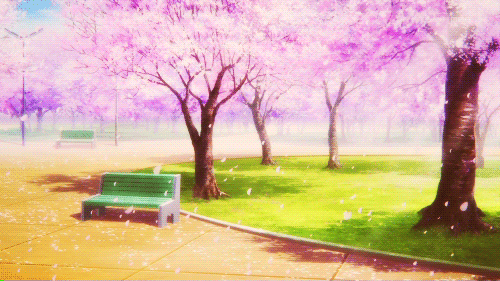
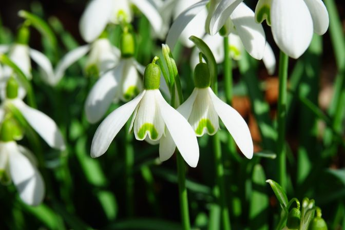
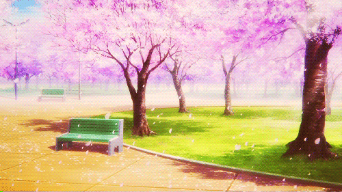

Ciekawostki o wiośnie

- Słowo „wiosna” pochodzi od prasłowiańskiego wyrazu „vesna” („ves” oznacza wesoły). Vesna była starosłowiańską boginią, symbolizującą odrodzenie.
- Wiosna jest symbolem odrodzenia i nowego życia.
- Wyróżnia się kilka rodzajów wiosny, między innymi wiosnę astronomiczna, kalendarzową, meteorologiczną i termiczną.
- Rośliny zwiastujące wiosnę to przebiśniegi, krokusy, fiołki, tulipany, narcyzy, żonkile, hiacynty i wierzba.
- Zmiana czasu na letni odbywa się zawsze w ostatnią niedzielę marca.
- Najzimniejszy początek wiosny miał miejsce w 1942 roku. Termometry pokazywały wówczas 24 st. C na minusie.
- Najcieplejszy pierwszy dzień wiosny zanotowano w 1974 r., gdy za oknem było 25 st. C.
- Węgierscy naukowcy z Uniwersytetu Semmelweisa w Budapeszcie wykazali, że osoby urodzone wiosną to życiowi optymiści i ludzie sukcesu, a na dodatek wykazują się niezwykłą kreatywnością.
- Okres wiosenny jest szczególnie trudny dla alergików. W tym okresie zwiększa się stężenie pyłków roślin.
źródło: https://www.national-geographic.pl/artykul/ciekawostki-o-wiosnie